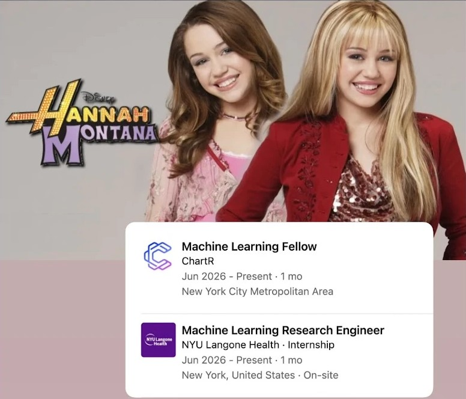
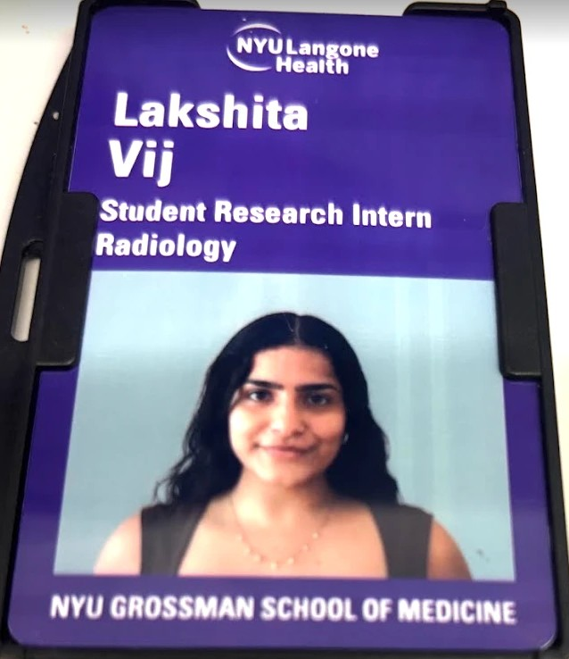

Prostate cancer detection
I developed multimodal deep learning for prostate cancer detection, so we can prevent the number of unnecessary biopsies that happen.


The problem
One in eight men will get prostate cancer in their lifetime, but not all of it is dangerous. Some cancers are indolent, meaning slow-growing and basically harmless, so treating them does more harm than good. What doctors really need to catch is clinically significant cancer.
The usual path runs from a PSA blood test, to an MRI, to a biopsy, to pathology. PSA alone is unreliable, because it goes up with benign conditions, infections and even age, so leaning on it can send patients to biopsies they never needed. Biopsies carry real risk, including pain, infection and bleeding, and they drive overdiagnosis of cancers that would never have mattered. The hardest cases are the gray zone, an MRI score of PI-RADS 3, where the rule of thumb is to biopsy.
What I built
I built and compared models that combine an MRI with the clinical information a doctor already has before a biopsy: PSA, lesion details and the radiology report. The question was whether combining the two predicts clinically significant cancer better than either one alone, so fewer patients need a biopsy. I paid special attention to the hard PI-RADS 3 cases.
The model only sees what a doctor would know before the biopsy result. It never sees the answer, or anything that only exists after the answer is known, so it has to make a real prediction.
I ran the whole machine learning lifecycle myself: training on NYU’s BigPurple cluster, tracking experiments and versioning models so the results can be reproduced.
How it works
We started from an existing 3D ResNet trained on MRI alone. On their own, the clinical and report features turned out to be even more predictive than the imaging, and both beat the PI-RADS score. The data was large but only partly labeled: 33,854 imaging exams for training, and just 5,541 of them with a biopsy-confirmed label.
First, I tried three ways of fusing the two inside the network. Late fusion joins the two sets of features at the end. Early attention lets the clinical data reshape the image features partway through. CBAM lets it steer two attention steps after the full imaging network.
Then I changed the approach. I trained the imaging model and the clinical model completely separately, let each reach its own best performance, and blended their final probabilities afterward with a simple average, a weighted average or logistic regression.
What it showed
The three fusion architectures barely improved on imaging alone, even though the clinical data on its own was stronger. I tested whether a frozen versus a trainable clinical encoder was the cause. It made no difference.
Blending separately trained models beat combining them during training, across every architecture I tried. All three blending methods landed in a tight, consistent range, and all beat either model alone. The best was a weighted average that leans slightly more on the clinical model, 60% clinical and 40% imaging.
What's next
Next, I would evaluate the blended model on the held-out test set to confirm it generalizes, and then work out how the improvement translates into fewer unnecessary biopsies, which is the real goal.
Two limits to keep in mind: only 5,541 of the 33,854 imaging exams have a biopsy-confirmed label, and all of the data comes from a single institution.